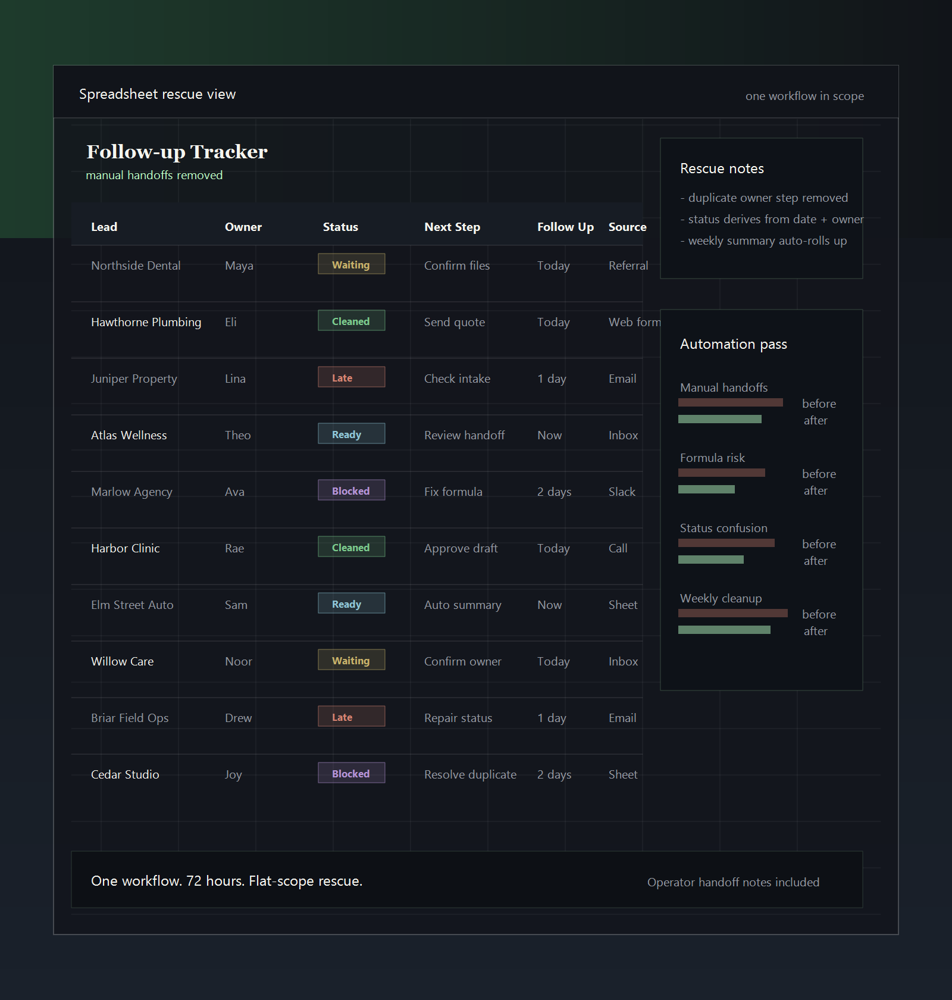

One file everybody depends on, nobody wants to touch
The sheet runs quoting, intake, scheduling, follow-up, or reporting, but only one person really trusts the formulas.
Spreadsheet Rescue Sprint
Built for owner-operated teams using Google Sheets or Excel for quoting, intake, scheduling, follow-up, or reporting. Send a redacted screenshot, get a yes-or-no fit read, and if it fits, the sprint stays fixed-scope.
Best fit when the spreadsheet still works, but drains attention every day.
Typical rescue candidates

What gets fixed
This sprint is for workflows that still technically run, but create avoidable friction every week.
The sheet runs quoting, intake, scheduling, follow-up, or reporting, but only one person really trusts the formulas.
Statuses, reminders, and summaries still rely on someone remembering to drag rows, copy tabs, or chase down blanks.
The numbers exist, but the view that management needs still takes cleanup before it can be shared.
It holds together on quiet weeks, then starts leaking errors, duplicates, and missed follow-ups the moment demand climbs.
What started as a practical sheet now behaves like a fragile mini-ops system with no clear owner or handoff.
What the sprint includes
The work is deliberately productized so the engagement stays sharp, fast, and easy to buy.
Map what the sheet actually controls, where it breaks, and which manual steps are doing too much work.
Tighten layout, formulas, naming, and logic so the file is easier to trust and harder to break.
Add the smallest useful automation layer needed to remove repeated manual effort without overbuilding.
You get a cleaned workflow, operating notes, and a short walkthrough so the fix does not stay trapped in my head.
Adjacent mess is documented, not silently pulled into scope.
How it works
01
A redacted screenshot, file name, or one short note is enough to start. Do not send live access or sensitive data before fit, scope, and payment are confirmed.
02
You get a quick answer on whether it looks like a clean sprint fit, where the drag probably lives, and what the scope likely is.
03
The 72-hour clock starts after scope, access, and deposit are confirmed, then the sprint stays focused on one workflow.
04
You get the repaired workflow, automation where it matters, and a handoff that your team can actually use.
Who it is for
Strong fit when one sheet quietly runs intake, quoting, scheduling, follow-up, or weekly reporting and someone still has to babysit it.
Not a fit for full system rebuilds, ERP or CRM replacement, broad data migrations, regulated or sensitive-data work without a separate agreement, or work that clearly wants a custom app instead of a 72-hour rescue sprint.
Why this is different
Spreadsheet Rescue Sprint
Generic spreadsheet help
Scoped around one workflow and one outcome
Starts vague, expands by the hour
Built to remove repeated operational drag
Polishes cells without fixing the working bottleneck
Automation only where it earns its place
Stacks extra complexity because "automation" sounds good
Clean handoff with notes and walkthrough
Leaves you dependent on the person who touched the file
Simple buying path: redacted screenshot, scope check, sprint start
Discovery-heavy process before you know the shape of the work
Offer
If the problem can be scoped cleanly, this stays simple: one sprint, one workflow, one flat-fee engagement.
Pilot sprint: $750 fixed fee. 50% upfront. The 72-hour clock starts after scope, access, and deposit are confirmed.
One workflow means one spreadsheet process with one owner, one main output, and one handoff. Full rebuilds, ERP or CRM replacement, regulated data work, broad migrations, ongoing admin, and custom app builds are out of scope.
Contact
Send a redacted screenshot, the file name, or a short note on where it breaks. That is enough to tell whether this wants a rescue sprint.
Hari at Spreadsheet Rescue Sprint · Toronto / Eastern Time
Hari at Spreadsheet Rescue SprintA redacted screenshot is enough to start. Remove sensitive client, payroll, health, account, and financial data before sending. You will get a fast read on fit, likely bottlenecks, and the cleanest next step.
Usually answered within one business day.